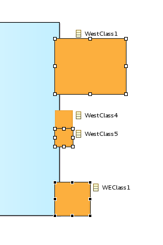

Sirius Evolution Specification: Make the Copy Appearance Action use the last selection
Preamble
Summary: The Copy Appearance Action should consider the last selected element as base style instead of the first one.
| Version |
Status |
Date |
Authors |
Changes |
| v0.1 |
DRAFT |
2016-03-25 |
fbarbin |
Initial version. |
| v0.2 |
DRAFT |
2016-04-20 |
fbarbin |
Corrections after team review. |
Relevant tickets:
Introduction
Currently, the
Copy Appearance Properties action is not consistent with the
Size Both action which uses the last selected element as base size. The
Copy Appearance Properties action uses the first selected element as base style. Furthermore, the last selected element is highlighted in a way that suggests this one is the reference to copy the style or the size.
Detailed Specification
Taking the following selection:

The last selected element is the dark border node. We can also notice that the last selection is highlighted with black handles. When applying the
Size Both action the two other selected elements take the last selection size:

However, when applying the
Copy Appearance Properties action, its the first selection which is taken into account:

This enhancement aims to modify this action to have a similar behavior to the Size Both Action.
Backward Compatibility and Migration Paths
There is no metamodel changes for this feature.
API Changes
We do not intend to change any API.
User Interface Changes
The end-user will see the new behavior of the
Copy Appearance Properties action. The tooltip of the action will also be changed.
Documentation Changes
The release note and the end user documentation will be updated.
Tests and Non-regression strategy
We will add a new SWTBot that checks the result of applying the
Copy Appearance Properties Action. This test will check with two and several selected elements if at the end, all the elements have the appearance of the last selection.
Implementation choices and tradeoffs
Since this action is defined in GMF we need to duplicate it. A patch will be suggested in GMF to modify this behavior.